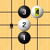

这个点曾一度被认为由于盘端原因无法必胜，但李洪斌老师在2007年世锦赛期间已经指出此黑5可以必胜。
http://hi.baidu.com/lihongbin/blog/item/76f1658929f685bf0f244494.html
http://hi.baidu.com/lihongbin/blog/item/3d77cf1353a2a8015aaf53f5.html
http://hi.baidu.com/lihongbin/blog/item/a191d5ef6039f134acafd50b.html
搁置许久，终因某些原因，花费少许时间做一个简单的地毯谱公布出来，以供初学者在学习寒星定式的过程中多一种进攻思路。
 寒星强4.rar
寒星强4.rar［ 黄药师 于 2012-4-27 20:03:08 时奖励此帖[金币加 100 威望加1］
［ 黄药师 于 2012-4-27 20:03:27 时花20金币送鲜花一朵］
［ 黄药师 于 2012-4-27 20:03:44 时花20金币送鲜花一朵］
［ 黄药师 于 2012-4-27 20:04:23 时花20金币送鲜花一朵］
［ 黄药师 于 2012-4-27 20:04:36 时花20金币送鲜花一朵］
［ 黄药师 于 2012-4-27 20:04:51 时花20金币送鲜花一朵］
［ 山城刀客 于 2012-4-27 22:51:29 时花20金币送鲜花一朵］
［ wuxiao 于 2012-4-28 10:35:41 时花20金币送鲜花一朵］
［ 小红眼镜 于 2012-4-28 10:56:10 时花20金币送鲜花一朵］
［ 陶涛业余 于 2012-4-28 17:18:35 时花20金币送鲜花一朵］
［ aabb 于 2012-6-14 23:02:26 时花20金币送鲜花一朵］
其实吧
我发这个贴的意思是
他喵的没人贡献一下松月反一打能不能必胜么
 都弄不出来。。。。
都弄不出来。。。。 感谢屏蔽大师，娃娃我收下了。
感谢屏蔽大师，娃娃我收下了。［ 屏蔽 于 2012-6-13 17:26:33 时奖励此帖[金币加 100 威望0加1］
［此帖子已被 屏蔽 在 2012-6-13 17:26:54 编辑过］